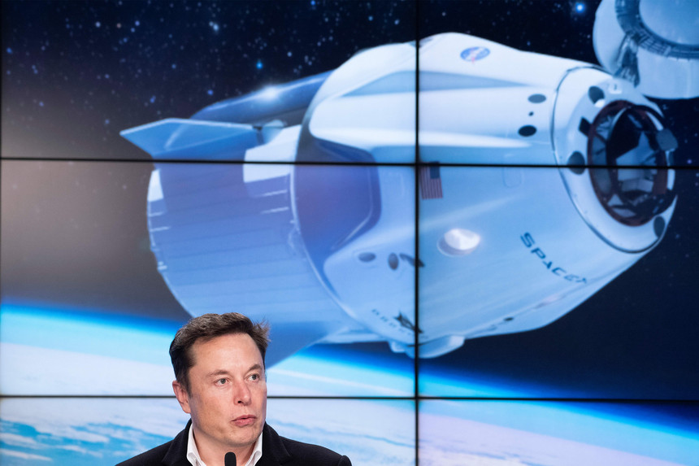
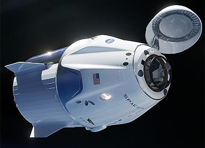
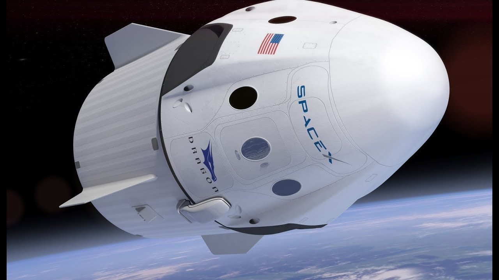

Cápsula de transporte de pessoas da Space X chega com sucesso à Estação Espacial Internacional
Elon Musk durante uma conferência de imprensa sobre o lançamento da Crew Dragon
A parceria entre a NASA, a Boeing e a SpaceX, no âmbito do programa de voos comerciais da agência espacial do estado americano, deu mais um passo importante no objetivo de efetuar missões tripuladas ao Espaço. Pela primeira vez, o módulo de transporte, Crew Dragon, foi abordado com sucesso, no Espaço, por astronautas da Estação Espacial Internacional.
Pela primeira vez na história da humanidade, dois astronautas entraram numa cápsula Crew Dragon, feita pela SpaceX, enquanto em órbita. Um feito que não acontecia desde 2011, quando a nave Atlantis atracou na International Space Station (ISS). Este foi um ponto de viragem para a exploração espacial, na medida em que se trata da primeira nave lançada por iniciativa de investimento privado, que foi tripulada no Espaço. O lançamento foi feito a partir do Kennedy Space Center, durante o sábado passado, tendo sido utilizado um rocket Falcon 9 para levar a Crew Dragon para fora da atmosfera terrestre. Para sua surpresa, ao entrarem na nave, David Saint-Jacques (canadiano) e Oleg Kononenko (russo) encontraram um boneco de peluche com a forma do planeta Terra e um manequim vestido de astronauta chamado Ripley, deixados pela agência espacial. De acordo com os planos da NASA, a Crew Dragon estará pronta para voltar à Terra na próxima sexta-feira e da próxima vez que voltar ao Espaço pode vir já tripulada por pessoas (possivelmente em julho). Os programas comerciais da agência espacial feitos em parceria com a Boeing a SpaceX têm-se focado em criar métodos viáveis para transportar pessoas até órbitas espaciais baixas. Embora em fase de testes, quando os projetos forem avante, será a primeira vez que companhias privadas vão levar humanos ao Espaço.

"A new generation of space flight starts now with the arrival of @SpaceX’s Crew Dragon to the @Space_Station. Congratulations to all for this historic achievement getting us closer to flying American Astronauts on American rockets." #LaunchAmerica pic.twitter.com/QMOuE2ecwm
— Jim Bridenstine (@JimBridenstine)
March 3, 2019